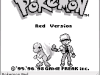
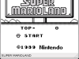
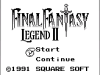
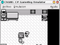
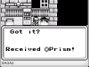
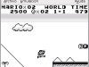

Introducción
CSGBE (C# GameBoy Emulator) es un emulador de la consola GameBoy escrito en lenguaje C# 1.0
Inicialmente pensado como un proyecto personal, finalmente se convirtió en mi PFC (Proyecto de fin de Carrera) de Ingeniería Informática en la UC3M (Universidad Carlos III de Madrid). Se concluyó a finales de diciembre del 2006 y se presentó el día martes 13 de febrero del 2007 obteniendo la nota de Matrícula de Honor.
Funcionalidades
CSGBE emula los siguientes elementos:
CSGBE NO soporta los siguientes elementos:
Aviso importante
Este emulador no está pensado para su uso habitual. Tiene multitud de fallos, funcionalidades sin implementar y no está optimizado en ningún aspecto, por lo que sólo debería usarse para uso docente o investigador.
Existen multitud de emuladores centrados en la compatibilidad y rendimiento con muchos años de trabajo detrás de ellos y muchas más prestaciones, como por ejemplo VisualBoyAdvance que soporta GameBoy, GameBoy Color y GameBoy Advance, o KiGB
CSGBE permite:
Existe más información sobre su utilización en el manual de usuario, anexo de la memoria de proyecto
Las teclas no son configurables: Z y X se corresponden con los botones A y B respectivamente y la tecla Return con el botón Start.
Screenshots
Haz click en las imágenes para verlas más grandes
Screenshot 1
Presentación del juego Pokèmon Red. Es análoga al juego Pokèmon Blue. ©1998
{kind=link}
Screenshot 2
Introducción del juego Super Mario Land. ©1989
{kind=link}
Screenshot 3
Introducción del juego Final Fantasy Legend II. ©1991
{kind=link}
Screenshot 4
Captura correspondiente al comienzo del juego Pokèmon Red/Blue. Los menús funcionan perfectamente, así como los combates, pero el movimiento por la pantalla provoca errores gráficos.
{kind=link}
Screenshot 5
Captura correspondiente al juego Final Fantasy Legend II. Sufre los mismos fallos que los Pokèmon.
{kind=link}
Screenshot 6
Captura correspondiente al primer nivel del juego Super Mario Land. Funciona perfectamente a excepción del reloj de tiempo y los puntos que impiden pasar al siguiente nivel.
{kind=link}
Descargas
| Documentación | ||
|---|---|---|
| DOC / PPT | ||
| Memoria | Descargar (936 KB) | Descargar (1,1 MB) |
| Presentación | Descargar (207 KB) | Descargar (249 KB) |
El código fuente está disponible aquí (60 KB). Requiere Mono 1.x y GTK# 2.x
Sólo se ha conseguido probar con éxito bajo plataformas GNU/Linux, aunque puede que funcione usando .NET Framework con algunos cambios.